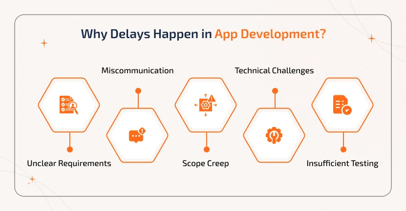
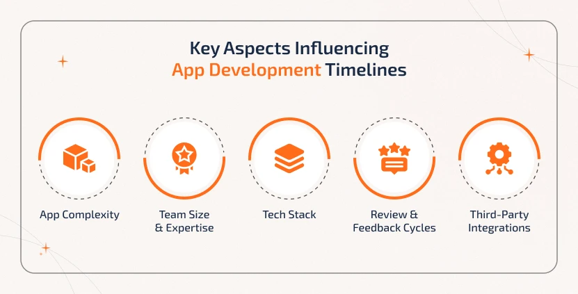
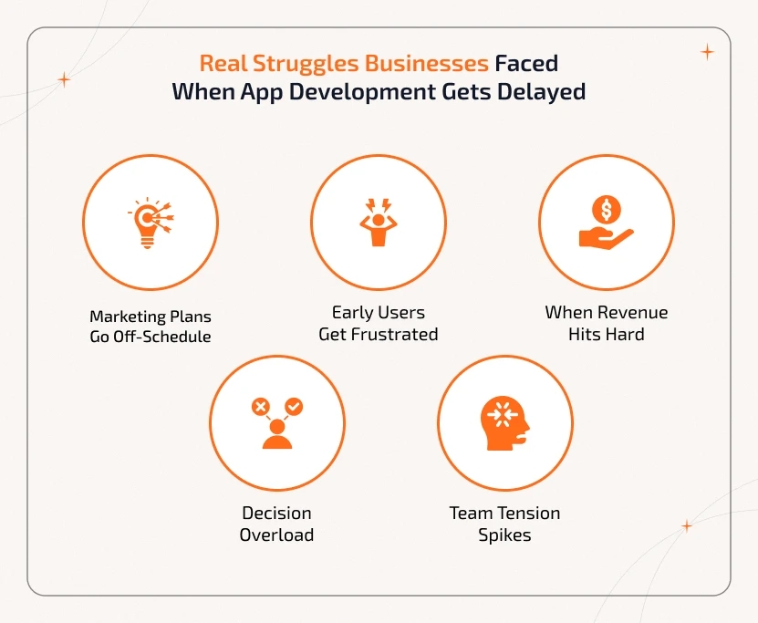
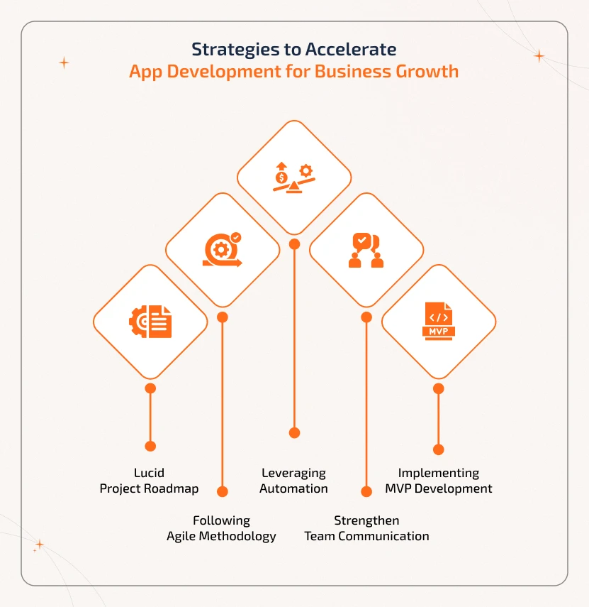
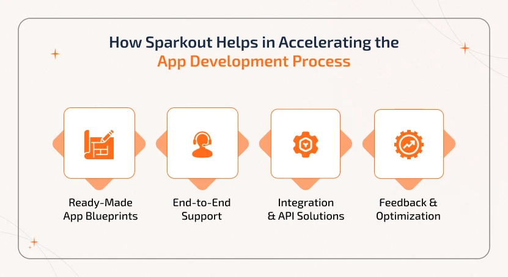

App development delays can be a literal nightmare for any business that is trying to stay competitive. It invokes team frustration, missed opportunities, and causes endless conflicts that drain an individual's energy. Every day your project lags is another day your competitors pull ahead of you in the evolving business. Situational delays are natural, but it doesn’t have to be inevitable. With a proper approach, your business can keep your project on track and will not have to deal with application delivery delays anymore.
In this informative blog, you’ll uncover the practical and proven strategies to accelerate the web and mobile app development process and stop potential delays. These unique tips are designed for businesspeople who really need a smooth and stress-free output.
How Long Does It Actually Take to Develop an App?
The fact is, there’s no standard timeline for app development. Simple applications with limited essential features will take only a few weeks, while complex and feature-rich apps can extend up to months. Sometimes, it can even take a year or two. Common factors like design complexity, size of the project, and platform selection play a major role and thus determine how long the development process will take.
Equally dividing the process into proper stages can make the difference. Starting from planning, designing, development, testing, and deployment, makes it clearer to estimate exact timelines. Having a clear understanding of what each step involves helps businesses to identify flaws early and address issues.
Why Delays Happen in App Development?
Sometimes, even the best-planned projects can run into roadblocks. A keen understanding of what actually causes the mobile app development delays is the initial step to prevent them from happening.

Unclear Requirements
To develop an app flawlessly, the organization must define the project’s goals and
features clearly. If it doesn’t, then it leads the businesses to spend extra time on
guessing or reloading the work. While undertaking a big project, even a small
misunderstanding can lead to wasted effort and can lead to missed deadlines.
Miscommunication
Failing to give regular updates or
missing coordination between the teams can delay the progress. This will always lead
to repeated revisions and frustrations that could have been avoided with simple and
proper communication.
Scope Creep
Implementing new features or changing the
requirements during mid-project is a major factor that causes application
development delays. While going through a usual flow, even a minor inclusion can
slow down teams and do affect the development process.
Technical Challenges
Facing technical issues while
developing a full-scale application is common and rare to avoid. Unexpected bugs
usually take a bit longer to solve. At times, these technical barriers can be
unavoidable. Speaking of solutions, smart planning and anticipating potential
challenges before they occur can reduce the overall impact of the delay.
Insufficient Testing
Holding back
until the end of the development cycle to test the app might uncover critical
issues. This leads the team to redo the work from the start. So, early and
continuous testing helps teams to discover the issues sooner. This prevents small
and potential bugs that might transform into bigger fish and are difficult to catch.
Key Aspects Influencing App Development Timelines
Usually, building an app takes time, but few factors can even stretch that timeline more than ever. Understanding the key aspects helps businesses to plan accordingly and avoid potential delays.

App Complexity
As said before, applications with limited
features and simple structures are easy to develop. On the contrary, an app with
complex features and logic takes much longer than usual. Embedding with advanced
functionalities like AI models or real-time data processing will require additional
coding, testing, and leads to extend the timeline.
Team Size & Expertise
Having a well-rounded and experienced
team can work faster and smarter and complete the task with minimal errors. Whereas,
smaller and less experienced teams in the mobile and web app development might take longer to finish the
time and meet deadlines. Moreover, it also takes longer to troubleshoot issues and
delays in making quick decisions.
Tech Stack
In mobile app development, choosing a tech stack
is very important. Because it is the one that defines the app’s architecture,
scalability, security, and efficiency. Specific frameworks support rapid prototyping
and reliable maintenance, leading to quick development. In contrast, other ones
demand more setup time, which will add delays in finishing the work.
Review & Feedback Cycles
Regular revisions and increased
feedback loops will consume a lot of development time. When more than one
stakeholder reviews each stage or keeps changing the input, businesses will end up
revisiting completed work very often. Even though feedback is a necessary factor,
multiple reviews without a clear direction will weaken the process and will extend
the overall timeline.
Third-Party Integrations
Using any
external API or third-party tool means your project depends on it. If it breaks or
changes, your project can have problems too. In the meantime, businesses often need
additional time for testing and debugging integration issues, which adds further
delays.
The Real Impact of App Development Delays
Delays in app development create chaos across the entire project and also among teams. Starting from rising costs to team burnout, the following setbacks can cause a serious impact on the business.
Increased Development Costs
If the app development delay
persists, each and every extra hour of work adds to the business budget. Our teams
need more resources, advanced tools, and additional testing times. These development
costs quickly add up and make the project more expensive than originally planned.
Missed Market Opportunities
When the app launches with a
time delay, the competitors will capture your target audience. This will reduce the
market advantage, which makes it harder to stand out in the evolving market and meet
current trends. As a result, the app becomes outdated before you even launch it.
Reduced Productivity
Delays in the project will hinder the
efficiency of the workflow. In the meantime, businesses often end up waiting a long
time for dependencies or changing the existing code. This will drain motivation and
cause teams to focus less. Overall, this will reduce productivity and affect the
product’s quality.
Client Dissatisfaction
Usually, clients will expect
transparency and precise delivery throughout the entire project. If there’s a little
bit of delay in the mobile app development process, the trust will be broken,
leading to frustration among teammates. Moreover, in certain situations, this might
even lead to having a bad name for your brand’s credibility and relationship with
clients.
Employee Retention Risks
Regular
delays will cause potential burnout among the developers and employees. If the
deadline keeps being delayed, it creates uncertainty and brings discouragement. If
this uncertain practice continues, it can push skilled employees to seek
opportunities elsewhere. This will affect the long-term sustainability of a
business.
Real Struggles Businesses Faced When App Development Gets Delayed
Delays in application development aren’t just numbers in the timeline. They hit in many ways that each of us faces every single day.

Marketing Plans Go Off-Schedule
Usually, businesspersons
spend weeks planning for pre-launch campaigns, influencers' collaboration and
seasonal promotion. All the efforts end up in vain, and the entire team’s endeavour
gains nothing when the app gets delayed for simple technical reasons.
Early Users Get Frustrated
Early users and beta testers
are really excited to try the new app feature, and they expect things to get on
time. When the features are inconsistent and the launch is pushed back, it will
frustrate them. This will potentially lead to giving negative reviews, loss of
trust, and missed opportunities.
When Revenue Hits Hard
For every hour the app is delayed,
revenue is getting out of hand. For subscription-based and e-commerce applications,
our delays pushed back earnings. Not just for us, but also for the teams and
investors counting on that project, it can cause cash flow stress.
Decision Overload
App delays will force businesspeople to
make tough choices (ex, should I cut off the feature, pay more to speed development,
or can I push the launch again?). Anyone ending up in this situation will be
exhausted mentally and often feel like coping with too many risks at once.
Team Tension Spikes
When a delay
occurs, the entire team, including designers, developers, and QA teams, will face
the same pressure as the CEO does. Miscommunication, blame, and stress will often
land on the shoulders, making it hard to keep things straight.
Building Strong Partnership With App Development Company
When the development cycle starts to get weak at times, miscommunication and unclear expectations will make things even worse. Small startups, businesses and enterprises that are facing app development delays can break this barrier by fostering open collaboration with trustworthy development teams. Shared understanding of project goals, regular check-ins, and progress updates make sure that everyone is on track.
To your surprise, our team at Sparkout focuses on partnership, ain’t just delivery. We do work closely with our clients to pinpoint the exact reasons behind app development delays. If it’s a technical hurdle, uncertain requirements, or resource congestion, our Sparkout team will resolve the issue with absolute precision. By prioritizing the goals and improving client communication, we assist businesses to regain momentum and bring their projects back in the lane confidently.
Strategies to Accelerate App Development for Business Growth
Quickening the app development process isn’t actually about rushing things up. It’s more like handling things smarter for business growth. Here are the strategies that we follow at Sparkout to stay focused, minimize bottlenecks, and deliver the apps faster without compromising performance.

Lucid Project Roadmap
A well-organized and clear roadmap
gives the business a clear vision of the project’s scope from start to end. It
splits up tasks, sets milestones, and highlights dependencies to pass on unnecessary
inclusions. With a clear and concise structure, the development team can stay
organized for the entire lifecycle.
Following Agile Methodology
Getting adapting to agile
practices allows businesses to work flexibly and enables them to respond to evolving
changes efficiently. Regular sprints and constant feedback approaches aids to locate
the issue early before they spread across. This agile methodology keeps the project
on track, ensures flawless progress.
Leveraging Automation
By taking advantage of smart
automation in designing, testing, code generation, and deployment, businesses can
speeds up repetitive tasks faster than before. Automation minimizes manual
intervention and reduce human-made errors to maintain the quality. These tools free
up developers and helps to focus on bigger fish, while automation carries a smooth
background processes.
Strengthen Team Communication
Clear and strong
communication between designers, developers, and stakeholders is mandatory for
faster cross-platform app development.
Leveraging collaboration tools and updating the progress consistently will keep
everyone informed. This drastically minimizes misunderstandings and potential mobile
app project delays.
Implementing MVP Development
Instead
of testing after a full-scale development, focusing on MVP ( Minimum Viable Product) lets the business launch the
product faster. It gathers real-world feedback from users and helps in improving the
app’s performance. By repeating this, teams can improve the application’s efficiency
and launch a product that aligns with the market trends without delays.
Making the Move to a Reliable Dev Partner
Even if you’re trying your best, and the app development project keeps hitting roadblocks? Deadlines slip repeatedly, and features don’t meet your expectations, then it might be a sign that the current development company isn’t the one you need. Businesses can’t afford ongoing delays every time, as it breaks customers’ trust. Observing these signs early will prevent wasting resources and keep the project alive.
Switching to a more reliable partner can bring a fresh spring after a long winter, breathing new life into your app development journey. Our development team at Sparkout steps in to evaluate the project, streamline workflows and implement agile methodologies for sustainable growth. With a clear-cut plan, technical expertise, and an advanced tech stack, our Sparkout team ensures the app marches forward efficiently without delays.
How Sparkout Helps in Accelerating the App Development Process
Whenever app development faces delays, picking up the right tools and support makes a huge difference. Our offerings are specifically designed to integrate seamlessly with your existing projects for resurrection.

Ready-Made App Blueprints
Pre-built app templates and
frameworks will speed up the coding process by maintaining flexibility for easy
customization. These custom solutions allow teams to focus on core features and
reduce repetitive work.
End-to-End Support
From ideation to deployment, our
dedicated team ensures that every phase of the app development is managed
efficiently. Our dedicated services provide proper guidance and best practices for
mobile app development timeline issues.
Integration & API Solutions
Flawless integration with
third-party services and APIs will keep the application stay connected and function
without delays. With ready-made solutions and implementation guidance, businesses
can easily add features and boost overall development.
Feedback & Optimization
Regular
improvements will unlock the full potential of efficient development. Our dedicated
feedback systems and optimization services allow teams to collect insights, tune
features, and modify the workflow in real-time, ensuring effectiveness towards the
competition.
Rebuilding Client Confidence Through Reliable Delivery
By delivering reliable service consistently, many clients approached our Sparkout agency after facing setbacks like missed timelines, unclear communication, and incomplete projects. Over time, our dedicated team has collaborated on software projects across various industries. This includes “Parkk”, a smart mobility platform, “Farmsent”, a Blockchain platform for farmers, and “Finvest”, a trustworthy fintech solution.
The software experiences have given a practical perspective on how and why the delay occurs. These data-driven insights help our team to step into a project as problem-solvers, who can bring both innovation and confidence.
With expertise in reviving a fallen software project, our technical team transforms weak build into successful launches. Also, our transparent communication capabilities deliver results with maximum precision. From stabilizing existing codebases to re-engineering core functionalities, we at Sparkout bring every application back on track. When the timeline slips, we just don’t catch up; we take control, bringing speed and accountability that drive your project to the finish line.
Winding Up
For businesses, app development delays will feel like a hamster running in circles. Deadlines shift, expectations rise, and trust will break. But the good news is delays aren’t permanent. With smart planning, clear communication, and timely interventions, businesses can regain full control and strengthen the project. The Main key is to learn and rectify from each and every hiccup and build a process that keeps the app moving forward from ideation to launch.